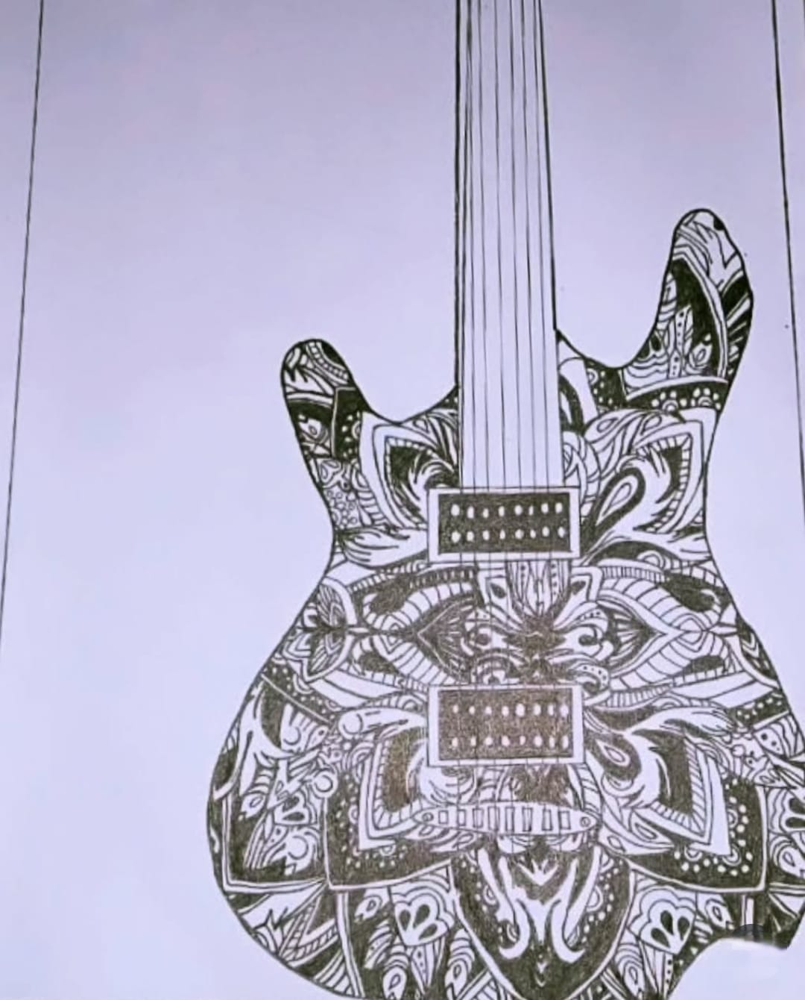

Guitar

Medium: Pen Art
Year: 2021
This Artwork Represents Guitar In A Detailed Pen Art Style,
The Guitar Artwork Elegantly Showcases The Soul Of Music Through Flowing Curves, Fine Strings, And Detailed
Textures, Expressing Rhythm, Emotion, And Creativity While Symbolizing Passion, Harmony, And The Powerful Connection
Between Music And The Human Heart.